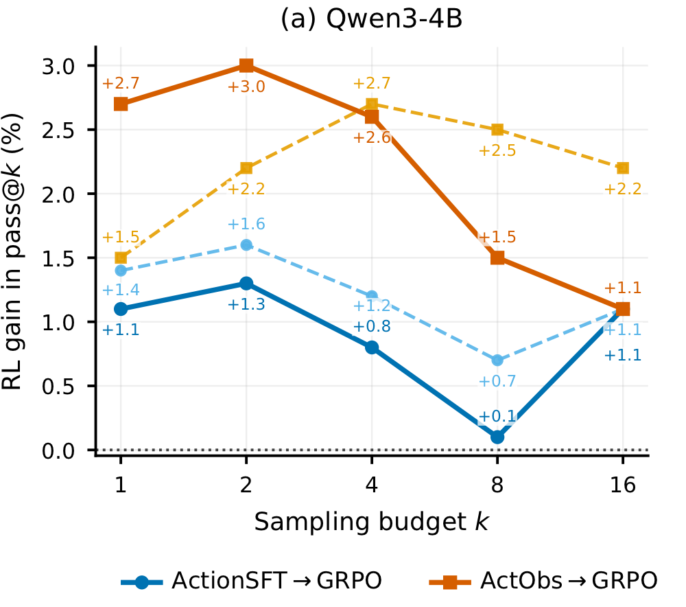
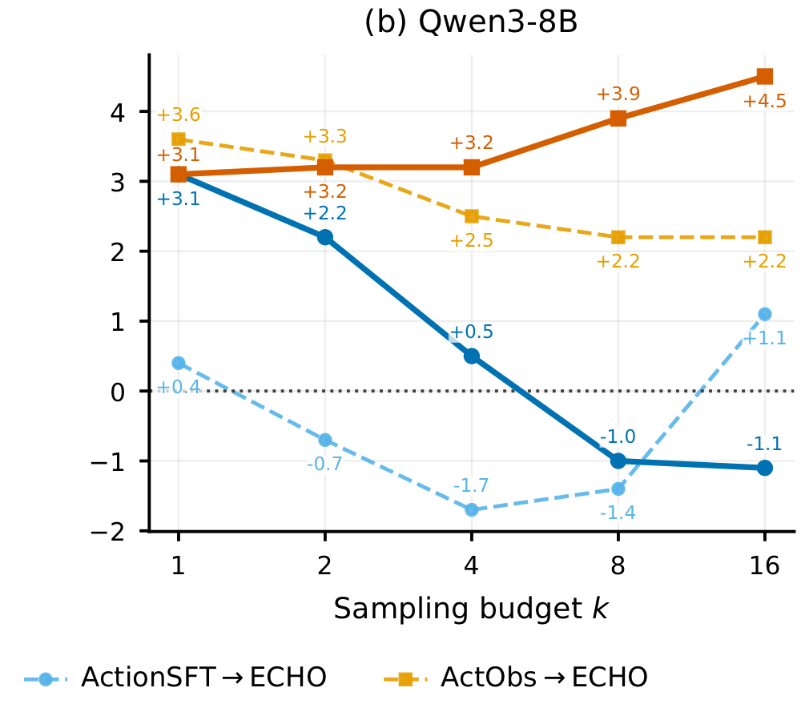
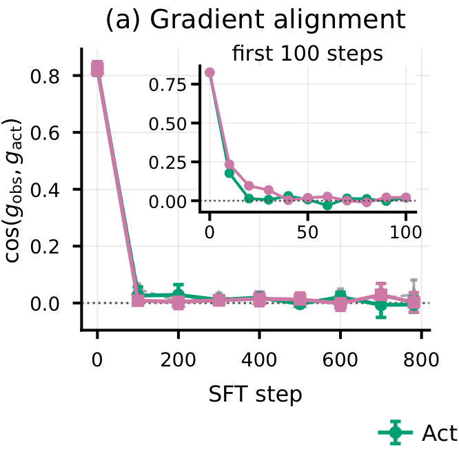
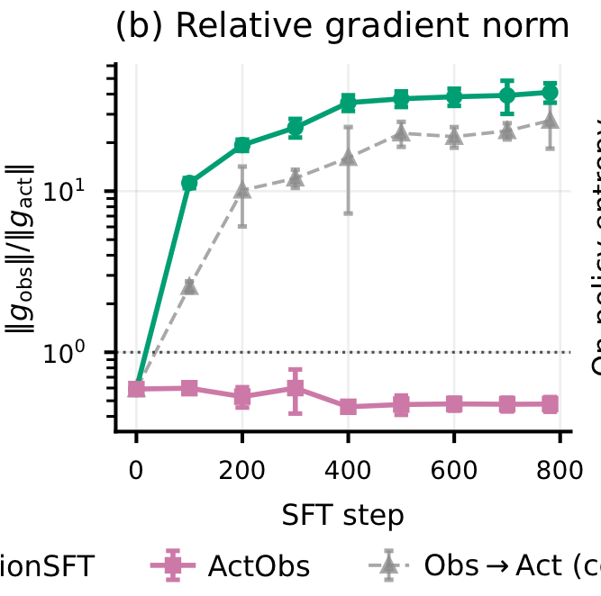
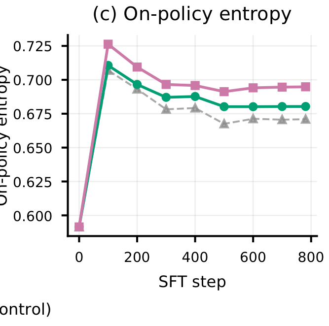
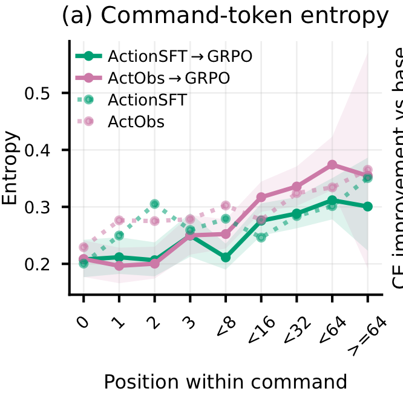
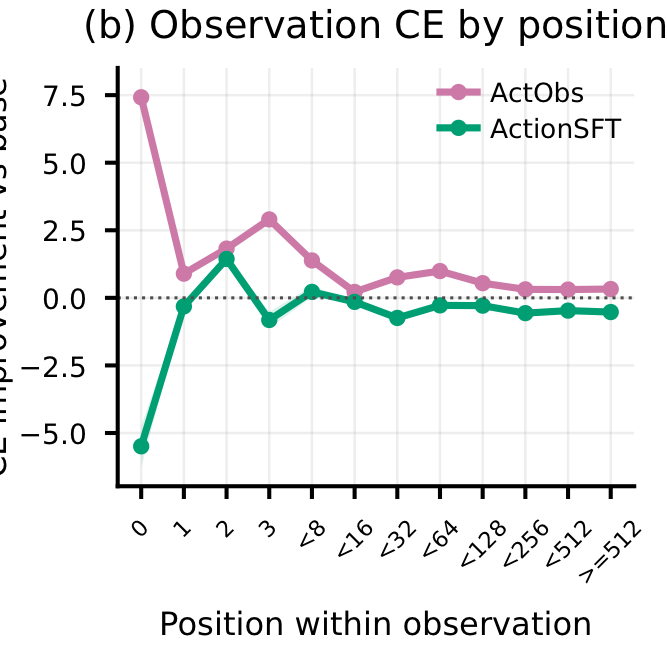
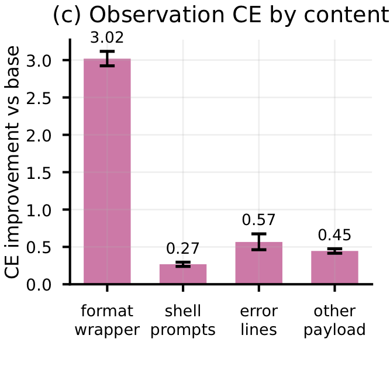
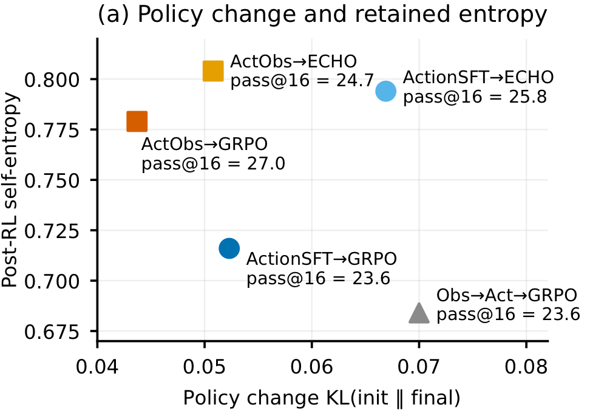
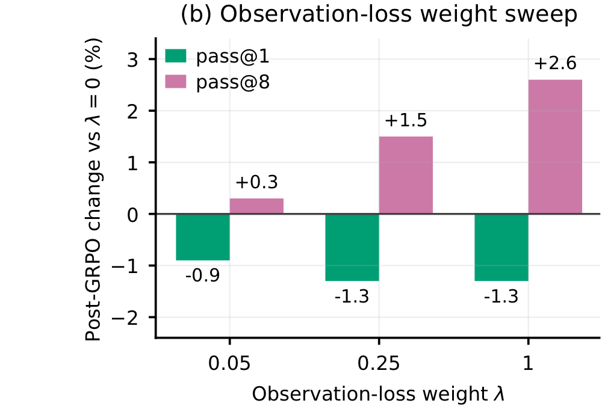

Shuffled observations
打乱 action–observation 配对后，8B SFT 的 pass@1 从 7.9 降到 3.7。它仍能制造较高熵，却不能带来强性能，说明“更随机”不是充分解释。
Don't Mask the Environment: Observation Supervision Changes How Agents Explore Under RLJuzheng Zhang、Disha Makhija、Manoj Ghuhan Arivazhagan、Vinayshekhar Bannihatti Kumar、Rashmi Gangadharaiah · University of Maryland / AWS AI Labs · 2026-09-17
论文挑战的不是某个复杂训练算法，而是 Agent SFT 中一个几乎默认的选择：environment observation 只进入 context，却不进入 loss。
标准 Agent SFT 把轨迹看成 teacher action 的序列：模型学习在历史状态 ht 下复现动作 at，而工具输出、终端回显或环境反馈 ot 只作为下一轮输入。这个做法在部署逻辑上很自然——Agent 负责生成动作，环境负责生成 observation——却偷偷引入了一个更强的训练假设：只要会模仿正确动作，模型就会自动保留“这个动作会导致什么”的理解。
ActObs 的真正研究问题是：当 SFT 只是后续 RL 的初始化时，这个假设是否成立？论文的回答是否定的。动作模仿与结果预测在训练早期共享方向，但很快分离；仅优化动作能够得到一个立即表现不错、却对后续探索不友好的尖锐 policy。把 observation 也纳入监督，则让同一条轨迹同时成为 imitation example 与 transition example。
这个定位也解释了它与邻近路线的差别。它不是显式 world model，不在推理时模拟未来，也不是在 RL rollout 上附加新的 consequence loss；它改变的是交给 RL 的初始 checkpoint。
| 路线 | 环境反馈的角色 | 发生阶段 | 新增资源 | 与 ActObs 的关键差别 |
|---|---|---|---|---|
| Action-only SFT | 只作为 context | SFT | 无 | observation token 被 mask，不直接形成梯度 |
| ActObs | context + prediction target | SFT | 无新增数据或前向 | 联合拟合 action 与其已实现 consequence |
| Obs→Act | 先学 observation，再学 action | 两阶段 SFT | 多一个训练阶段 | 相同两类监督被时间分开，未复现高预算优势 |
| ECHO 等 observation-aware RL | RL rollout 上的辅助预测目标 | RL | on-policy transition loss | 干预发生更晚；论文显示它与 ActObs 初始化可互补 |
| 显式 world model / planner | 可被查询或用于想象 rollout 的模型 | 训练与推理 | 额外模型、目标或调用 | ActObs 只让 shared policy 隐式吸收 transition signal |
比较依据：论文 §2、§3、§6 及 Appendix B。表中“隐式吸收”是编辑性概括，不表示论文证明了完整可查询的 world model。
ActObs 的实现几乎是一个 label-mask 改动；它的意义却不在工程复杂度，而在于把 observation 从“被读取的信息”升级为“必须被预测的结果”。
轨迹写作 τ=(x,a₁,o₁,a₂,o₂,…,aT,oT)。在 observation 位置预测 ot 时，模型已经看见任务、历史以及刚刚执行的 at，因此优化的是 p(ot|ht,at)。它至少迫使参数表示“在这个上下文里，这个动作之后通常出现什么”，并让这部分表示与生成下一步动作共享同一套权重。
但“学习 consequence”需要谨慎理解。论文只监督 teacher 选择的动作及其真实发生的一次结果，不提供同一状态下多个反事实动作的结果，也没有要求模型在部署时显式生成未来状态。因此它学到的是 realized transition prediction，不是已经验证过的 causal simulator。把它称作隐式 dynamics knowledge 是合理解释，把它等同于完整环境模型则超出了证据。
控制实验说明：不是任何额外文本都有效，也不是 observation 曝光越多越好。真正有用的是动作能力仍被保持、action 与 feedback 正确配对、两种目标在整个 SFT 中联合优化。
打乱 action–observation 配对后，8B SFT 的 pass@1 从 7.9 降到 3.7。它仍能制造较高熵，却不能带来强性能，说明“更随机”不是充分解释。
只学 observation，或先 ActionSFT 再做 observation-only，均无法解出任务。Consequence supervision 是 action learning 的补充，不是替代。
先 observation-only、再 action-only，接受了同类监督却没有复现 ActObs 的 high-k 优势；联合目标比顺序暴露更关键。
λ 从 0 增至 1 时，8B post-GRPO pass@8 从 21.0 单调升至 23.6，而 pass@1 从 12.3 降至 11.0：这是可靠性—覆盖率 trade-off。
这篇论文最反直觉的证据不是“ActObs 涨点”，而是同一初始化在 SFT 评测上可能更弱，却让相同 GRPO 在大采样预算下得到更宽的成功覆盖。
所有方法使用同一批 50k 多轮终端轨迹、同一 Qwen3 4B/8B 骨干与一轮 SFT；随后在 2,392 个与 SFT 不重叠的 Endless Terminals 任务上做 135 steps GRPO。主评测 Terminal-Bench 2.0 含 89 个 OOD 任务，每个 headline checkpoint 固定 16 次尝试；aider-polyglot 再用 225 个六语言代码编辑任务测试跨域迁移。
下表只保留能回答核心命题的对照：ActObs 是否只是更好的 SFT，还是改变了 RL 可提取的能力。应同时看单次可靠性、重复采样收益与解题覆盖，而不是只挑一个最高数字。
| 规模 / 阶段 | 初始化 | pass@1 | pass@4 | pass@8 | pass@16 | solved / 89 | 关键解释 |
|---|---|---|---|---|---|---|---|
| 4B · SFT | ActionSFT | 4.5 | 10.4 | 14.0 | 16.9 | 15 | 立即性能几乎持平 |
| 4B · SFT | ActObs | 4.4 | 9.9 | 14.0 | 18.0 | 16 | 高 k 略高 |
| 4B · GRPO | ActionSFT→GRPO | 5.6 | 11.1 | 14.0 | 18.0 | 16 | RL 增益较窄 |
| 4B · GRPO | ActObs→GRPO | 7.2 | 12.5 | 15.5 | 19.1 | 17 | 每个 k 都更高 |
| 8B · SFT | ActionSFT | 9.2 | 18.2 | 21.9 | 24.7 | 22 | ActObs 的直接起点更弱 |
| 8B · SFT | ActObs | 7.9 | 16.1 | 19.7 | 22.5 | 20 | pass@1 −1.3pt，pass@16 −2.2pt |
| 8B · GRPO | ActionSFT→GRPO | 12.3 | 18.7 | 21.0 | 23.6 | 21 | single-shot 更可靠 |
| 8B · GRPO | ActObs→GRPO | 11.0 | 19.3 | 23.6 | 27.0 | 24 | pass@16 +3.4pt；覆盖 +3 tasks |
来源：论文 Table 1、Appendix Tables 2–4。原表报告 bootstrap standard error；此处为突出结构而仅列点估计，完整不确定性见原文。

ActObs→GRPO 在全部 k 上获得更大的 RL 增益。

ActionSFT 的 GRPO 增益在高 k 转负，ActObs 则持续扩大。
4B 中，ActObs 初始化在全部 k 上产生更大 GRPO 增益；8B 中，ActionSFT 的增益随 k 增大而收缩并在 k≥8 转负，ActObs 则从 +3.1pt 增长到 +4.5pt。
阅读要点：这是“更好的 policy landscape”最直接的证据之一，但它证明的是优化结果与采样覆盖的差异，不是对 loss landscape 几何的完整刻画。
跨域结果进一步排除了“只记住终端格式”的简单解释。在 4B aider-polyglot 上，ActObs 的 SFT checkpoint 本来更弱，但 GRPO 后 pass@1 达 13.9，对 ActionSFT→GRPO 的 9.7 高 4.2pt；pass@4 为 25.3 vs 20.4，高 4.9pt。由于这 225 个代码编辑任务没有出现在 SFT 或 RL 集中，结果支持 observation-aware SFT 改变了可迁移的初始化，而不只是在原任务族上拟合得更好。
论文最重要的分析结果是：action loss 与 observation loss 只在最初短暂同向，随后几乎正交；因此“把 action 学好”不会自动把 consequence 学好。

绿色 ActionSFT、粉色 ActObs；共同方向很快消失。

绿色 ActionSFT 最终约 41；粉色 ActObs 约 0.5。

差异约在 step 100 出现并维持至训练结束。
在 256 条 held-out 轨迹上，action 与 observation 梯度余弦相似度从 0.83 很快降至经验噪声底。ActionSFT 的 ‖gobs‖/‖gact‖ 最终约为 41，ActObs 则维持约 0.5；策略熵的差异在约 step 100 出现并保持到 781 steps 结束。
阅读要点：当两类梯度近乎正交，action update 已无法替代 observation update。ActionSFT 在动作目标上接近驻点，却仍处在陡峭的 observation 方向；这正是论文所谓 one-sided specialization。
token-level probe 让这个机制不止停在梯度几何上。ActionSFT 对真实 terminal feedback 的 teacher-forced cross-entropy 甚至比 base model 更差，而 ActObs 不仅学会固定的 “New Terminal Output:” 前缀，也改善 shell prompt、error line 与其他 payload 的预测。也就是说，纯动作模仿确实伴随原有环境反馈预测能力的退化。

熵差主要在命令后部扩大，而非起始 token。

ActObs 在固定前缀之外的多数位置仍保持正改善。

改善覆盖 shell prompt、error line 与其他 payload。
post-GRPO 的前几个 command token 同样尖锐，熵差主要在命令后部扩大；这些位置更常编码参数、选项、路径等实现细节。观察预测改善也延伸到可变 payload，而非只记住格式头。
谨慎解读：这支持“有结构的 action support”，但不是对完整 strategy diversity 的证明。盲评显示，每个已解任务的 distinct strategy 数在不同方法间接近；更明显的差别是同一高层方案的执行与参数采样更不相关。
接下来是探索性解释：ActObs 的 post-RL self-entropy 为 0.779，ActionSFT 为 0.716；同时前者相对自身 SFT 起点的 endpoint KL 更小。换句话说，它不是靠 RL 大幅改写 policy 后才变得多样，而是让 RL 在更少位移下保留更多起始 support。提高 ActionSFT 的 sampling temperature 到匹配熵的水平，并不能补上 pass@k 差距；ECHO 还能产生更高熵，却不一定解出更多任务。因此核心不是“熵越高越好”，而是概率质量是否仍覆盖有用、可执行的替代动作。

ActObs→GRPO 处在较小 KL、较高熵与最高 pass@16 的组合点。

λ 提高把 operating point 从 single-shot reliability 推向 repeated-sampling coverage。
左图中 ActObs→GRPO 同时具有最小 endpoint KL、较高 self-entropy 与最高 pass@16；右图则展示 λ 增大时 pass@8 上升、pass@1 下降的连续 trade-off。
阅读要点：这更像对 policy support 的重新分配，而不是无条件性能提升。若部署只允许单次尝试，ActionSFT 可能仍是更合适的 8B operating point；若允许并行采样或重试，ActObs 的覆盖优势更有价值。
把整条机制链拆开，可以区分哪些是直接证据、哪些仍是作者解释或编辑推断。这样能避免从“benchmark 涨点”一步跳到“模型拥有环境世界模型”。
| 主张 | 直接证据 | 证据强度 | 仍缺什么 |
|---|---|---|---|
| action supervision 不等于 consequence supervision | 梯度在 10–20 steps 内近正交；ActionSFT 留下巨大 observation residual | 强机制证据 | 是否跨模型家族与非文本环境仍成立 |
| ActionSFT 会损害环境反馈预测 | held-out observation CE 低于 base model 表现，且多个 payload 类别一致 | 直接功能证据 | CE 退化对任务失败的因果中介程度 |
| ActObs 保留更好的探索 support | 高 self/fixed-state entropy、较小 endpoint KL、high-k 与 task coverage 更高；温度匹配无效 | 多证据一致 | 显式 KL/entropy regularized ActionSFT 能否匹配 |
| 模型学到 environment dynamics knowledge | 正确配对 observation 有用；预测真实反馈改善 | 部分支持 | 反事实 action→outcome 查询、长期 consequence 与因果干预评测 |
对 Master–Worker、长期经营或 Skill Evolution，最值得迁移的不是“把 observation token 也算 loss”，而是把经验的基本单位从 Condition→Action 升级为可验证的 State–Action–Consequence。
如果经验库只保存“连续 3 天无动销 → 降价 5%”，它记录的是 policy rule，却没有记录这条规则是否在什么条件下奏效、代价是什么、效果持续多久。更完整的经验至少要把决策前状态、动作参数、即时环境反馈、延迟 outcome 与目标判断分开存储。这样 Master 才能从 transition evidence 中归纳策略，而不是把一次动作误写成普遍规则。
ExperienceRecord {
state: {context, constraints, resources, uncertainty}
action: {operator, parameters, executor, timestamp}
immediate_obs: {tool_output, errors, state_delta}
delayed_outcomes: [{horizon: 24h, metrics: {...}}, {horizon: 7d, metrics: {...}}]
goal_evaluation: {reward, side_effects, constraint_violations}
provenance: {task_id, environment_version, evidence_link}
confidence: {repeat_count, variance, confounders, counterfactual_status}
}
这里需要比论文再向前走一步。ActObs 的一条轨迹只给出 factual consequence：teacher 做了 a，环境返回了 o。真正用于长期自进化的 experience schema 还应记录时间尺度、可观测性、环境版本、外部干预与重复试验，否则“降价后订单上涨”无法区分价格因果、季节效应或流量变化。对于经营型 Agent，Observation 与 Outcome 也不应混为一谈：终端回显是即时 observation，利润、退款率或库存风险可能要在数小时甚至数周后才显现。
一个更稳健的 Master–Worker 闭环，应让 Worker 产生带 provenance 的 transition record，再由 Master 做对照、聚合与策略晋升。策略不直接从一条 trace 中抽取，而是在证据达到阈值后从多个 transition 中形成。
一次具体 S–A–O：可回放、可审计，但不直接宣称可迁移。
多次相似状态下的 consequence 分布：记录均值、方差、失败条件与异质性。
把目标与约束加入选择：何时用哪个动作、何时 abstain、何时主动试验。
维护可更新的 action→state transition hypothesis，并用新观测校准或推翻。
ActObs 同时降低 action-only 专门化、提高熵并缩小 endpoint KL。最强未做对照是：对 ActionSFT 加显式 KL/entropy regularization，或匹配 policy displacement 后，是否仍低于 ActObs。这个实验能区分“语义正确的 consequence 学习”与“更温和的正则化”。
训练只观察 teacher action 的单一结果，没有同状态的替代动作结果，也没有长程 outcome。决定性检验应是反事实 action ranking、干预后的 state prediction，以及跨环境版本的 calibration。
只测 Qwen3 4B/8B、同一 tokenizer/chat template、单一 DeepSeek-V3.2 teacher，主训练域为文本终端。代码编辑提供跨任务证据，但尚不能推出 Web、GUI、具身或多智能体环境同样受益。
8B 中 observation 权重提高会牺牲 pass@1，收益依赖是否允许多次采样。真实系统还要计算并行 rollout、验证器与延迟成本；“更可探索”不是所有部署目标下都更优。
最后把全文压缩成五条可长期记住的判断。前三条由论文证据直接支撑；后两条是对你的 self-evolution 方向的研究性延伸。
来源与边界：本文依据 arXiv:2609.20715v1（2026-09-17）论文正文、附录与官方源文件整理；未独立复现实验。数值均可追溯至论文 Table 1、Figures 2/4/5/6 及 Appendix Tables 2–9。关于 Experience Schema、Master–Worker 与决定性对照实验的内容为编辑性推论，非论文原结论。
← 返回论文索引